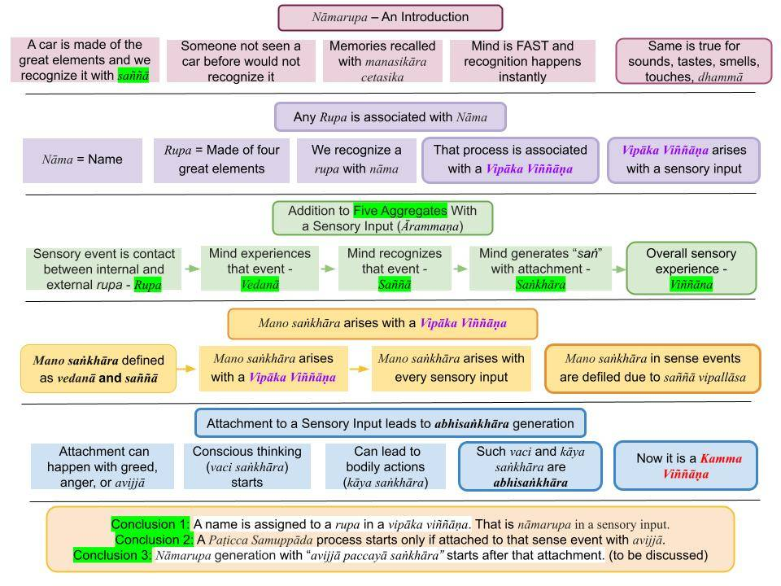

Nāmarupa can have very different meanings based on the context. Here, we will discuss the meaning associated with sensory experiences, i.e., those that are associated with vipāka viññāṇa.
April 9, 2023; revised January 29, 2024

Download/Print: “9. Nāmarupa – An Introduction“
Literal Meaning of Nāmarupa
1. In most sutta translations (to English), "nāmarupa" is translated as "name and form." That is the "literal translation" for nāmarupa with "name" for "nāma" and "form" for "rupa."
- Literal translation, direct translation, or word-for-word translation is a translation of a text done by translating each word separately without looking at how the words are used together in a phrase or sentence. See "Literal translation." This is a dangerous practice by many in translating Pāli suttas into English; see "Elephant in the Room” – Direct Translation of the Tipiṭaka."
- That literal translation holds ONLY for a nāmarupa associated with a vipāka viññāṇa. For example, if we have a friend named "Jack Smith," we associate his form (rupa) with that name. Thus when we see him, we immediately recognize him as "Jack Smith."
- All Arahants (or the Buddha) would recognize various people, sounds, tastes, etc., per their previous experiences. For example, the Buddha would not confuse Ven. Ananda as Ven. Sariputta. He would have experienced the external world just like we do.
- Thus, this type of "nāmarupa" is NOT associated with avijjā and is NOT the same "nāmarupa" that appears in "viññāṇa paccayā nāmarupa" in Paṭicca Samuppāda. That type of nāmarupa is discussed in "Nāmarupa in Idappaccayātā Paṭicca Samuppāda."
Nāmarupa in a Vipāka Viññāṇa Depends on Recognizing a Rupa
2. When you see a friend, how do you recognize him? The moment you see him, the mind tries to match his figure (rupa) with all other figures in memory (nāma in nāmagotta preserved in viññāṇa dhātu) and makes the match to identify it to be that friend's nāmarupa. This is an extremely fast process, and only a Buddha can explain it with citta vithis, nāmagotta, viññāṇa dhātu, etc. We will only go through a simple explanation here.
- A rupa can be a visual object, a sound, a taste, etc. Nāma is the "name" associated with it. Typically, "nāma" or the name is assigned. The friend's rupa matches his given name, say, Jack.
- A mug and a bowl, both ceramic, are on a table—their assigned names correspond to their particular shapes. Furthermore, the names depend on the language. If a mug is shown to someone who does not speak English, he would call it by a different name, for example, "Becher" in German.
- Thus, to figure out the nāmarupa associated with a rupa, one must have had prior experience with it. If a wristwatch is shown to a person in an isolated primitive habitat, he would not know what it is. No nāmarupa can arise in his mind, and he will be confused about the object.
- That description covers all types of rupa, including sounds, tastes, etc.
Arising of Five Aggregates with a Sensory Input
3. It is a good idea to discuss how vedanā, saññā, saṅkhāra, and viññāṇa arise when an internal rupa makes contact with an external rupa. That will take the mystery out of those words.
- Let us consider a tactile (touch) sensation to clarify those terms. You are sitting and relaxing with your eyes closed. Suppose a mosquito bites your arm. You feel that "bodily contact," which is a bit painful. So, it is a "dukkha vedanā." Even without seeing the mosquito, you identify it as a mosquito bite, which is the "saññā" (identification.)
- Some touches (like someone touching your arm) are not associated with a dukkha or sukha vedanā. It is a "neutral vedanā;" you just feel it. But that vedanā gives rise to a recognition that someone touched your arm. That recognition is "saññā." Thus, every sensory event is associated with rupa (two types: internal and external), vedanā, and saññā.
- Mano saṅkhāra are defined as "vedanā and saññā." Thus, every type of contact will generate mano saṅkhāra. In the above example, the overall sensory experience is a kāya viññāṇa (since it was associated with bodily contact).
4. In another example, we can do the following "taste test." We ask person X to close his eyes and then put a bit of salt on his tongue. That gives rise to a vedanā. He will say that vedanā was due to salt because he recognizes that particular taste and knows its associated English word (salt).
- That "taste test" follows the same steps. Contact is made with salt (external rupa) and his jivhā pasāda rupa (internal rupa); the latter is a complex process involving the tongue and brain until reaching the jivhā pasāda rupa. But the same steps of vedanā and saññā follow the contact of the two types of rupa (internal and external).
- Thus, we can now see why the five aggregates arise based on sensory interactions and arise in the order of rupa, vedanā, and saññā. Two rupās (one internal and the other external) make contact, giving rise to a vedanā; then that vedanā is recognized with "saññā."
- Now, we can also connect to saṅkhāra.
Mano Saṅkhāra Arise with a Vipāka Viññāṇa
5. In the examples discussed above, we saw that two rupās make contact to give rise to vedanā and saññā. But mano saṅkhāra are defined as "vedanā and saññā." Thus all sensory events are associated with mano saṅkhāra.
- At first glance, it may appear that mano saṅkhāra is not associated with defilements. However, even that initial mano saṅkhāra is defiled to some extent for anyone except Arahants. That is because there could be "saññā vipallāsa" (or "defiled saññā") associated with any sensory event.
- Yet, that level of defilement is weak. It cannot give rise to rebirths or even strong kamma vipāka during life. (Note: An Arahant would also feel all those sensations. However, the mano saṅkhāra of an Arahant is free of defilements since there is no "saññā vipallāsa." But an Arahant will experience the "distorted saññā" but will not get to the "defiled saññā" stage with attachment; see "Sotapanna Stage via Understanding Perception (Saññā).”)
Five Aggregates (Pañcakkhandhā)
6. The overall sensory experience is viññāṇa. Thus, now we see that all five steps in the sensory event are complete to yield rupa, vedanā, saññā, saṅkhāra, and viññāṇa (the five aggregates.)
- With each sensory experience, our five aggregates (pañcakkhandhā) grow.
- In the above cases, viññāṇa is vipāka viññāṇa, i.e., they arose due to the contact between an internal rupa with an external rupa (a sensory input.)
- Details at "Arising of Five Aggregates Based on an Ārammaṇa", "Memory Records- Critical Part of Five Aggregates," and "Where Are Memories Stored? – Viññāṇa Dhātu."
Some Insights on Nāmarupa In Vipāka Viññāṇa
7. To recognize anything in the external world, we must have had previous experiences with it. Let us take a simple example to clarify.
- Suppose X goes to work in a new company in a city he has never even visited. On the first day in the office, he would not know anyone. But a few weeks later, he will be able to see a co-worker (say, Y) and instantly recognize who it is. That recognition is saññā.
- However, that recognition requires more than the saññā cetasika. It involves all six "universal cetasika." They are phassa (contact); vēdanā (feeling); saññā (perception); cētanā (volition); Ekaggata (One-pointedness); jivitindriya (life faculty); manasikāra (memory). For details, see "Cetasika (Mental Factors)" and "Saññā – What It Really Means."
- Let us briefly discuss the complex process responsible for "recognizing a person/sound/taste, etc."
8. After a few weeks, X would have had many interactions with Y. All those interactions are added to X's five aggregates (rupa, vedanā, saññā, saṅkhāra, viññāṇa.). In the first week, X would have been introduced to Y, and X could associate Y's form (rupa) with Y's name (say, Jack.)
- Every time X interacted with Jack, different aspects of Jack (tone of voice, mannerisms, etc.) would be incorporated into the five aggregates of X. In particular, those past interactions are now recorded in X's nāmagotta or "memory records."
- Therefore, when X sees Jack (his rupa), it instantly brings back memories of past interactions (recorded mainly as vedanā and saññā). We have discussed that vedanā and saññā are "mano saṅkhāra." Thus, mano saṅkhāra arises in the mind of X upon seeing Jack's figure approaching him.
- We can go a step further. Suppose others have told X that Jack can get angry quickly. Those words of others are also in nāmagotta and recalled within a split second. Thus vaci saṅkhāra may arise in X, saying to himself to be careful not to "trigger Jack" by saying something Jack may not like. Various mental factors (cetasika) that arise with cittās (including those "universal cetasikās" mentioned in #7) help this complex process of recognizing people, sounds, tastes, etc.
- I have discussed this with examples in "Amazingly Fast Time Evolution of a Thought (Citta)" and "The Amazing Mind – Critical Role of Nāmagotta (Memories)."
- Now, let us discuss how a response to a sensory event can lead to the accumulation of kamma.
Attachment to a Sensory Input Leads to Kāya and Vaci Abhisaṅkhāra
9. In the example of #3 above, the mosquito bite could be painful, and anger may arise in you. The immediate thought could be to kill the mosquito and ensure it would not bite again. That conscious thought to kill the mosquito is a vaci saṅkhāra. Then, you may slap the mosquito with the other hand. Moving the hand involved kāya saṅkhāra. They are also vaci and kāya abhisaṅkhāra since they involve anger, a defilement.
- Furthermore, the decision to kill the mosquito was a kamma viññāṇa. As you see, saṅkhāra and viññāṇa go together: "(abhi)saṅkhāra paccayā (kamma)viññāṇa" starts the kamma accumulation, and "(kamma)viññāṇa paccayā (abhi)saṅkhāra" will generate more abhisaṅkhāra, in this specifically kāya abhisaṅkhāra, to strike the mosquito.
- This time, the initial mano saṅkhāra developed into a vaci saṅkhāra with an intention/expectation. That expectation was to kill the mosquito. That is an abhisaṅkhāra, and it led to a kamma viññāṇa. That involved different types of "nāmarupa" arising in mind; see "Nāmarupa in Idappaccayātā Paṭicca Samuppāda."
- On the other hand, an Arahant would not kill the mosquito. Instead, the reaction to the pain could be to fan with the other hand to get the mosquito off. Thus, no abhisaṅkhāra or kamma viññāṇa would arise in an Arahant.
Accumulation of Five Aggregates with Vipāka and Kamma Viññāṇa
10. Now you can see how various types of vedanā, saññā, saṅkhāra, and viññāṇa can arise when an internal rupa contacts an external rupa. You can see that additions to the five aggregates occur with EACH sensory contact between an internal and an external rupa.
- The initial reaction of the mind to such a sensory event (ārammaṇa) is a vipāka viññāṇa. In the above example of a mosquito bite, it was a painful feeling together with the saññā.
- But in some cases, we RESPOND to such vipāka viññāṇa by taking actions or at least thinking about taking defiled actions (both count as new kamma).
- The angry thought and the decision to kill the mosquito arose in kamma viññāṇa.
- Of course, both initial sensory experience (vipāka viññāṇa) and one's responses to it (kamma viññāṇa) are recorded as the five aggregates (pañcakkhandhā): rupakkhandha, vedanākkhandha, saññākkhandha, saṅkhārakkhandha, and viññāṇakkhandha.
Contemplate with Examples
11. It is necessary to contemplate such examples and understand the meanings of mano saṅkhāra, vipāka viññāṇa, kamma viññāṇa, etc. Teachers use terms like vipāka viññāṇa and kamma viññāṇa to simplify and clarify concepts. See "Sutta Interpretation – Uddēsa, Niddēsa, Paṭiniddēsa."
- It is foolish to ask for "Tipiṭaka references" for such terms. Of course, if such terms lead to contradictions, one should bring up such issues. There are no such contradictions.
- One can never learn (or teach) by engaging in debates because, most of the time, it is unfruitful to discuss things with people whose minds are "closed off."
- During discussions in other forums like Dhamma Wheel, after a few attempts, I gave up trying to reason with people who could not think logically.